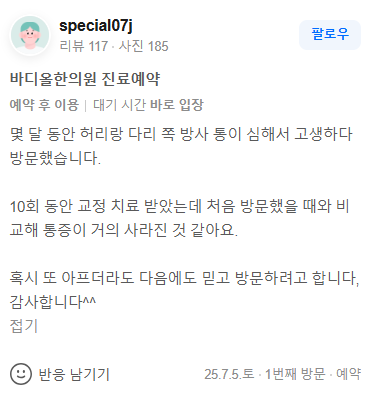

치료 증례 (실제 환자 영수증 리뷰 원문)
"몇 달 동안 허리랑 다리 쪽 방사 통이 심해서 고생하다 방문했습니다. 10회 동안 교정 치료 받았는데 처음 방문했을 때와 비교해 통증이 거의 사라진 것 같아요. 혹시 또 아프더라도 다음에도 믿고 방문하려고 합니다, 감사합니다^^"

1. 단순 근육·인대 치료의 한계: 뼈 자체의 정렬이 틀어져 디스크를 압박하고 있다면, 근육만 찢는 도침치료나 물리치료는 미봉책에 불과합니다.
2. 하지방사통의 생체역학적 원인: 좁아진 요추 분절 간격으로 인해 탈출된 추간판이 좌골신경근을 물리적으로 압박하여 다리 저림을 유발합니다.
3. 중증 척추 질환의 최종 해결책(Last Resort): 바디올 SART 교정은 유착된 골반과 요추를 미세 해머링으로 정밀 분리하여 디스크가 스스로 흡수될 공간을 원천적으로 확보합니다.
허리디스크(요추 추간판 탈출증) 환자분들은 접근성이 좋은 365일 연중무휴 한의원에서 침을 맞거나, 굳은 조직을 찢어준다는 도침치료를 흔히 받습니다. 물론 일시적인 근육 긴장 완화와 미세 유착 박리에는 도움이 될 수 있습니다. 하지만 왜 치료를 중단하면 다시 다리가 저리고 당기는 방사통이 재발할까요?
디스크가 터져 나온 근본 배경에는 요추 전만 소실과 골반의 하중 불균형으로 인해 특정 분절에 압박 벡터가 과도하게 집중되는 '구조적 결함'이 있기 때문입니다. 압박을 가하는 뼈의 배열을 바로잡지 않고 주변 연부조직만 자극하는 치료는 밑 빠진 독에 물 붓기와 다름없습니다.
바디올한의원의 SART 척추정렬회복술(공간척추정형술)은 겉근육만 문지르는 일반 추나요법이나 통증 부위만 타격하는 대증치료와 궤를 달리합니다. 중증 및 난치성 척추 질환 환자들이 수많은 치료를 전전하다 마지막으로 선택하는 '최종 해결책(Last Resort)'으로 평가받는 이유가 여기에 있습니다.
SART 교정은 정밀 진단을 통해 무너진 골반 중심축을 먼저 복원한 뒤, 특수 교정 도구를 활용하여 완강하게 잠겨 있는 요추 분절을 미세하게 두드려 깨워냅니다. 뼈와 뼈 사이의 수직적 공간(Space restoration)이 확보되면, 디스크 내부의 압력이 음압으로 바뀌면서 튀어나왔던 수핵이 제자리로 밀려 들어가는 생체역학적 반전이 일어납니다. 신경 압박이 근본적으로 해소되므로 10회 안팎의 치료만으로도 몇 달간 지속되던 다리 저림과 방사통이 획기적으로 줄어듭니다.
인체의 주춧돌인 골반 정렬을 바로잡아 요추에 가해지는 수직 압박을 근본적으로 분산시키고, 정밀 해머링 교정으로 좁아진 추간공을 확장하여 신경근 포착을 해소합니다.
탈출된 추간판 주변에 발생한 화학적 독성 염증을 빠르게 중화시키는 천연 성분 약침을 주입하고, 손상된 신경의 재생을 촉직하며 인대를 강화하는 1:1 맞춤 처방을 병행합니다.
단순 진통 관리를 넘어 구조적 공간을 확보하는 최종 해결책, 바디올이 답을 제시합니다.
수원시청역 9번 출구 인계동한의원 | 평일 밤 8시 30분까지 야간진료